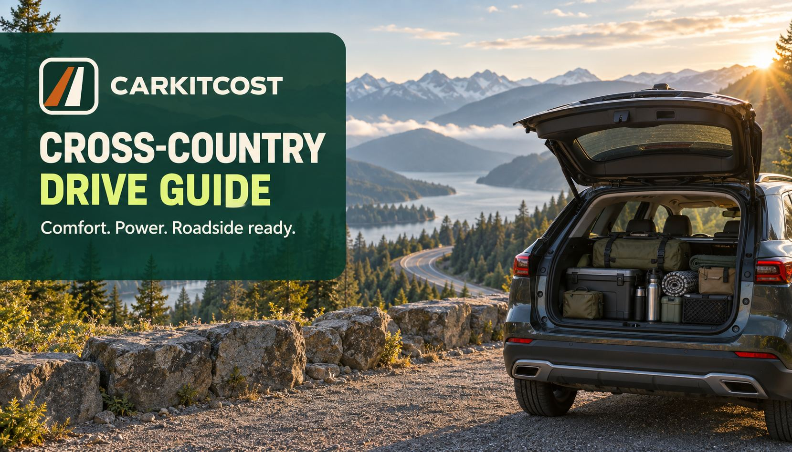

Staying comfortable and powered on a 5+ day drive.
Published
Long-haul drives fail for predictable reasons: nobody's comfortable after hour six, someone's device dies at the worst time, and a small mechanical issue turns into a stranded afternoon. Here's how to plan around all three.

1. Decide what kind of route you are optimizing
2. Fix the driver's fatigue point before it starts
Fatigue on long drives is mostly physical, not mental: it's hours of the same seat position compressing your lower back. A dedicated lumbar support pillow, added before the discomfort shows up, keeps a driver alert for longer stretches between rest stops.
3. Keep navigation visible and build in backup power
A dead phone can mean losing navigation, roadside assistance access, or contact while stopped somewhere unfamiliar. Use a secure dash mount, keep the primary phone charging, and carry a jump starter with its own battery. On trips longer than five days, duplicate the critical cable rather than relying on one.
4. Carry a roadside kit that assumes you're on your own
On a local trip, help is usually close by. On a rural interstate stretch, it might not be. A reflective roadside kit makes an unplanned stop visible and safer, and closes the gap between "waiting for help" and "handling it yourself."
5. Plan food and hydration stops that don't cost you time
A small cooler restocked at each overnight stop means you're not relying on whatever's available at the next gas station at 6am. Pair it with an insulated bottle so cold water doesn't turn into another unplanned stop by mid-afternoon.
6. Split the miles as well as the driving shifts
If more than one person can drive, decide the swap points before you leave, not when the first driver is already tired. Planning swaps around meals or fuel stops keeps the change smooth instead of becoming its own negotiation on the road. AAA recommends scheduling a break every two hours or every 100 miles on longer trips.
Keep reading: long road trip setup guide, trunk organization guide and minivan cross-country checklist.
Frequently asked questions
How often should I take breaks on a long drive?
AAA recommends scheduling a break every two hours or every 100 miles on longer trips. Plan the stops around fuel, food and driver swaps so they do not cost extra time.
How do I keep my phone charged and navigation working?
Use a secure dash mount, keep the primary phone charging, and carry a jump starter or power bank with its own battery. On trips longer than five days, bring a duplicate of the critical charging cable instead of relying on one.
What should I carry in case of a breakdown?
A reflective roadside kit makes an unplanned stop visible and safer, and a jump starter lets you restart the vehicle on your own. On a rural stretch of interstate, help may not be close, so plan as if you are on your own.
How can I reduce driver fatigue on a multi-day drive?
Fatigue on long drives is mostly physical, from hours in the same seat position pressing on the lower back. Add a lumbar support pillow before the discomfort starts, take regular breaks, and decide driver swap points before you leave.
Sources
Safety advice on this page draws on these pages.
- AAA Newsroom: Asleep At the Wheel: Drivers Unaware of How Drowsy They Really Are On longer trips, schedule a break every two hours or every 100 miles.
How we choose products and check facts: read our editorial policy. Found a mistake? Tell us or email hello@carkitcost.com.
Get a setup built for your route
The planner adjusts recommendations for route focus, trip length, vehicle, passengers, climate, and sleeping plans.
Driving in the cold? See the winter road trip checklist. As an Amazon Associate, CarKitCost may earn from qualifying purchases. Product links are selected for usefulness and trip fit, not placement fees.